OrDoamin
OrDomain | Responsive WHMCS Hosting WordPress Theme
- created: 19/06/2016
- by: ThemeLooks
- www.themelooks.com
- email: support@themelooks.com
Thank you for purchasing my theme. If you have any questions that are beyond the scope of this help file, please feel free to email via my user page contact form here. Thanks so much!
How to get help:
We will respond to buyers' questions via the contact form on our profile.
We run support 24/7. You can expect a response within 24 hours.
- Support requests are for:
- - Help using templates
- - Instructions setting up templates
- - Bug reports and fixes
- Support requests aren’t for:
- - Help with 3rd party plugins
- - Integration of 3rd party plugins
- - Free Customization Requests of our theme
OrDomain is a Responsive and WHMCS Hosting WordPress Theme developed for All kinds of Hosting theme. It's WordPress based theme Anyone can easily customize this theme to follow our Well Sorted Documentation.
Main Features of "OrDomain":
- - Latest WordPress v4.6.1 Ready
- - Latest Bootstrap v3.3.6 Ready
- - WHMCS Integration
- - Fully Compatible with “WHMCS Bridge”
- - WHMCS Templates Included for WHMCS 7.5.1
- - custom meta box cmb2
- - Fullscreen Image Background
- - Mailchimp Ajax Integrated
- - Twitter API Integrated
- - error free code
- - 100% Fully Responsive WordPress Theme
- - Modern Cross Browser Compatibility: FireFox, Safari, Chrome, Edge, IE9, IE10, IE11
- - Retina Ready - ultra sharp graphics on the newest screen
- - Great SEO base built-in ( compatible with most SEO Plugins like SEO by Yoast )
- - Free Updates
- - Great attention to details
- - Strong focus on usability
- - Ready for translation ( .pot files included )
- - True One-Click Demo Installation with content, sliders & theme options
- - Completely Styled Forms with included Contact-Form-7 Plugin
- - Advanced Theme Options Panel ( Redux framework! )
- - Rock solid code base written in HTML5 & CSS3
- - Child Theme compatible (example child theme is already included)
- - Page Layout Style (Default, Fullwidth, Left Sidebar, Right Sidebar)
- - 4 WordPress Custom Post Types (Domain Pricing, Hosting Price, Faq, Vps slide)
- - 650+ Google Fonts
- - WordPress Custom Widgets
- - Enhanced performance! Super Fast!
- - Strong Page Meta Option Like (Enable Page Loader, Page Breadcrumb Disable, Page Menu Selector, Homepage section image/color selector, Page Layout Selector, Header Selector, Header Logo Uploader)
Other Features of "OrDomain":
- - Google Fonts
- - FontAwesome Icons
- - Well Documented
- - and much more features…
Theme Installation
Once you download Ordoamin Theme, unzip the main item. you will see the following folders:
- ordoamin.zip theme files that you will need to upload them into your WordPress themes directory
- ordomain-child-theme.zip theme files that you will need to upload them into your WordPress themes directory
- UserGuide Documentation files
- DummyContent Demo Contents such as pages, and posts
- Plugins Required Premium Plugins that you need to install them manually
FTP Upload
- Unzip the "ordomain.zip" file
- Upload the extracted "ordomain" theme folder into "/wp-content / themes/" in your WordPress installation
- For Activate the theme, Go to Appearance > Themes and activate the installed theme
WordPress Upload
- Navigate to Appearance > Themes
- Click Add New button and finnaly hit the Upload Theme

- Click on Choose File and find the "ordomain.zip" file on your computer and click Install Now button
- The theme will be uploaded and installed
- For Activate the theme, Go to Appearance > Themes and activate the installed theme
Warning:
Please be informed that you should not upload the whole item you have downloaded from Themeforest as you will get an error of broken stylesheet file. Instead locate the ordomain.zip file inside the main file you have downloaded. While installing your theme through WordPress admin, you may encounter an error message saying “are sure you want to do this?” This is mainly due to your hosting php settings. In some hosting the default value for max_upload_limit left default which is 2mb. To solve this problem you should either increase your maximum upload size (to 50mb) on your hosting admin panel or ask your host to do it for you if you do not have the privilege to alter your server php settings. This is a very common request and they should be able to help you out. Once the limit is increased you can re-try the install and you’ll be all good to go.
Importing Demo Content
Below explanation is a step by step explanation on how to import our demo website content, please read carefully and if you face any problems that is not covered here, open a thread in our ticket system.
After theme activation it is advised to install default theme plugins:
- OrDomain Core (Required)
- Redux Framework (Required)
- CMB2 (Required)
- Ordomain Demo Importer (Required)
- Contact Form 7 (Required)
- WHMCS Bridge
- WP Retina 2x
- envato-WordPress-toolkit
- Yoast SEO
Click on Begin installing plugins and Simply select all plugins and install them. Then activate the plugins with help of Bulk action:
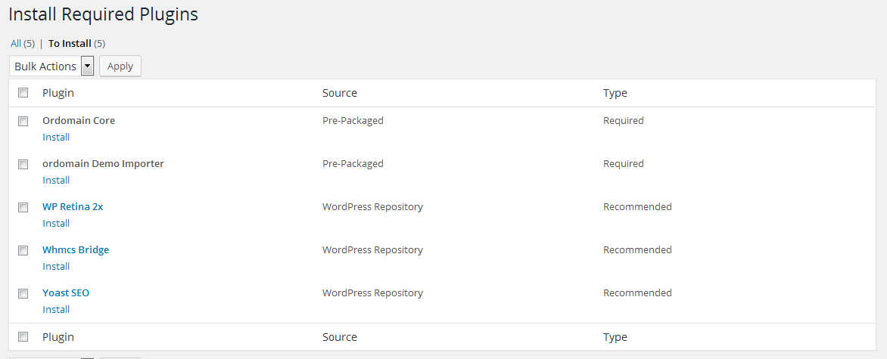Setting Up as Demo Site (Demo Data Install)
Read below instructions:
- Go to appearance > Import Demo data.
- Click on Import Demo data
Setting up Menu
OrDomain custom WordPress menus, with dropdown support for the primary menu.
Note: with importing demos all menus will be imported but please set related theme locations by yourself via Appearance> Menus
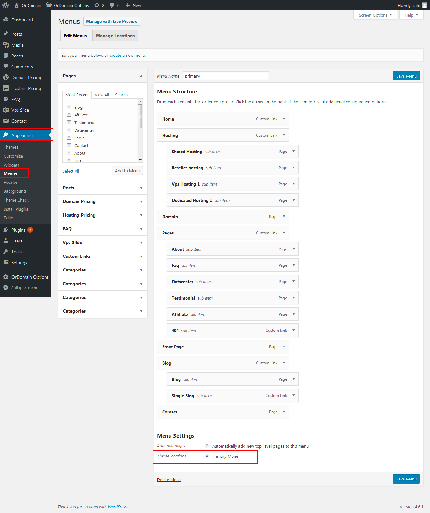To setup a new menu, please follow the steps below
Please note that it is better to create your own pages first, even if they are blank pages
- Navigate to Apperance > Menus page
- Click the "create a new menu" link to make a new menu. Enter the name then hit Create Menu
- To add a menu item, you can easily select one of your already made pages on the left hand side and click Add to Menu
- Enter Navigation Label Title Attribute description and menu icon , don’t forget to click Screen Options and select CSS Classes checkbox and enter font awesome class like ( fa fa-home ) in css class fields
- You can also add menu items by entering a custom name and custom link into the Custom Links box
- You can manage your menus using the drag and drop functionality. To create a dropdown menu, simply drag a menu item below and slightly to the right of another menu item and it will lock into place and create a dropdown section
- After setting up your menu, select the menu you just created as the Main Navigation in the Theme Locations box
- Once it's all done, make sure you click the Save Menu button
Create Home page
- Navigate to pages > Add New
- put page name
- select template name home page from right side
Setting up Home Page
Once you have created your home page, you need to select it to show up as the home page. To do this, follow the steps below.
- Navigate to Settings > Reading
- Select A Static Page for Front Page Displays
- Select your new home page for the Front Page

Setting up Blog Page
To setup your blog page, create a new page and name it anything that you want. Make sure the page Template is set to Default Template in the Template section of Page Attributes Box on the right hand side of the page editor.
- Settings > Reading and select your blog page name for the Posts Page
Create Page
Create any page using default template. Create specific page like ( teams, portfolio, services,Project, pricing, contact etc ) using custom template
- Page > Add New

Create posts
After your Blog page is made, you have to create posts to show up on the blog page. Follow the steps below to create a blog post.
All of your blog posts are made in the Posts section of your WordPress admin. Click on Posts to open the section. At the top of the posts page, click on Add New to make a new post. Create a title and insert your post content in the editing field
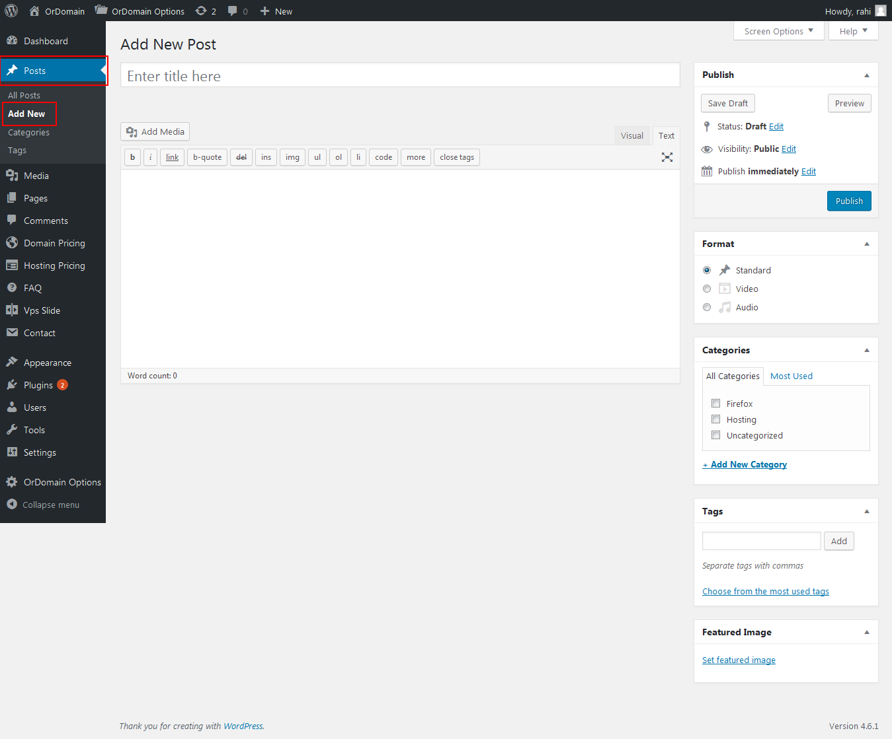
On the right hand side of the post page is the Categories box. To make a new Category, click + Add New Category and give it a name. You can have as many as you want. To apply a Category to a post, simply check the box next to the Category name.
To set post format right hand side of the post page is the format box click format.
You can also apply Tags to a post. The Tag box is below the Category box. Simply insert your tags, separate multiple tags with commas
To set a Featured Image. Click the Featured Image box and select an image from the media window and click Use As Featured Image
Once you have everything you want selected, click Publish and your post will show up on your blog page
Setting up Widgets
WordPress Widgets add content and features to your Sidebars and Footer. Examples are the default widgets that come with WordPress; for example post categories, tag clouds, navigation, search, etc. Widgets require no code experience or expertise. They can be added, removed, and rearranged on the WordPress Administration Appearance > Widgets panel. WordPress Widgets add content and features to your Sidebars. Examples are the default widgets that come with WordPress; for post categories, tag clouds, navigation, search, etc. Plugins will often add their own widgets.
How to use widgets:
- Go to Appearance > Widgets.
- Choose a Widget and drag it to the sidebar or footer where you wish it to appear. The widget areas designated
- Once you dropped the widget to widget areas, WordPress automatically updates the Theme and it will appear in its area.
- Preview the site. and look for the specified area you dropped your sidebar. for example if you used "archive widget area" you should look for it in archive loop.
- To arrange the Widgets within the sidebar or Widget area, click and drag it into place.
- To customize the Widget features, click the down arrow in the upper right corner to expand the Widget's interface.
- To save the Widget's customization, click Save.
- To remove the Widget, click Remove or Delete.
Front Page (Home) and Other Settings Video Tutorial
Theme Options
Go to Dashboard > OrDomain options, Change options and save
General Setting
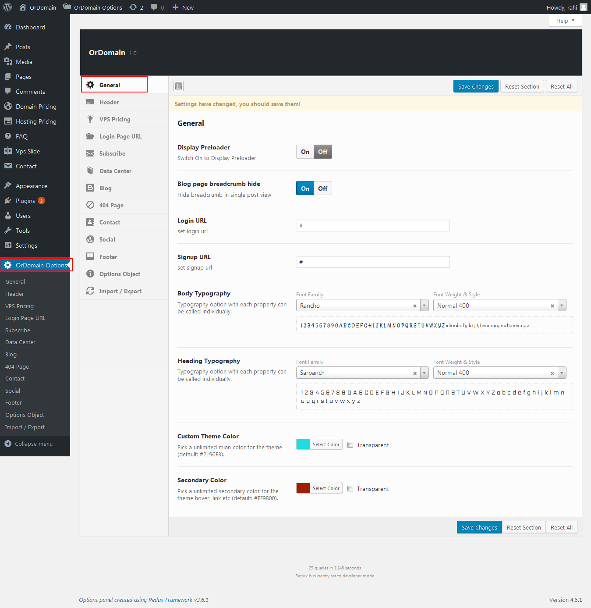Header Setting
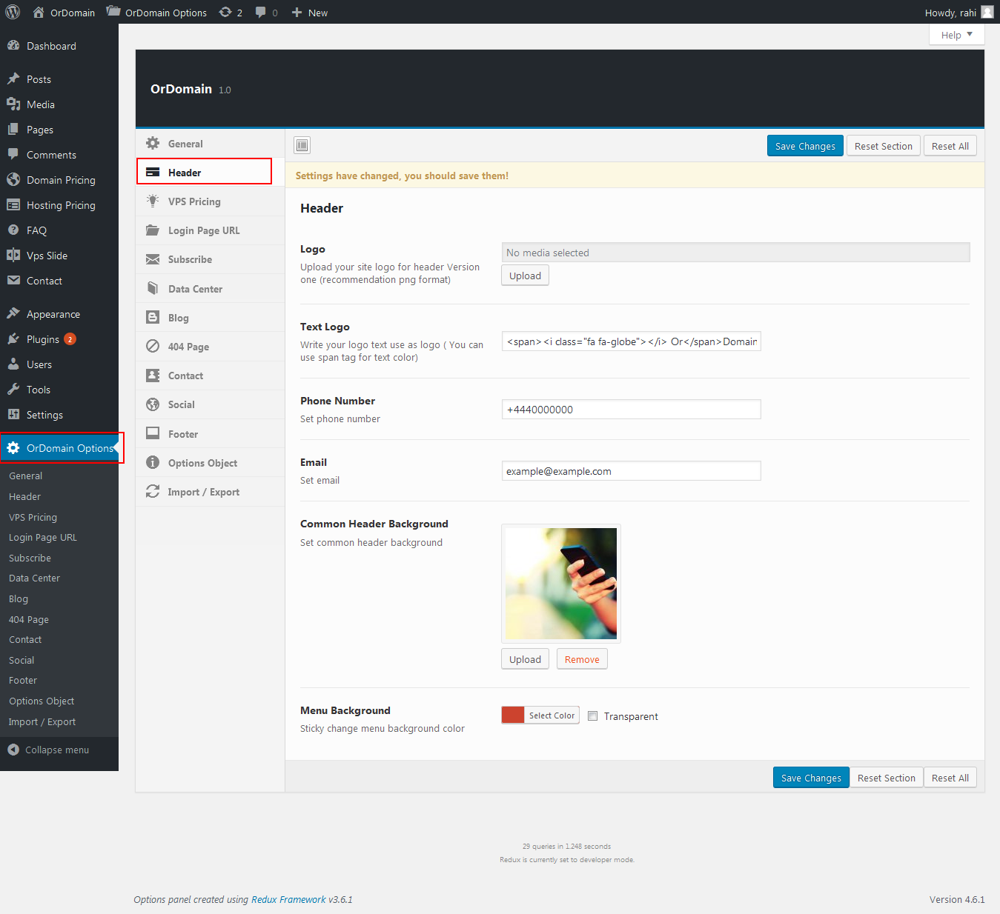VPS Pricing Setting

Login Page URL Setting
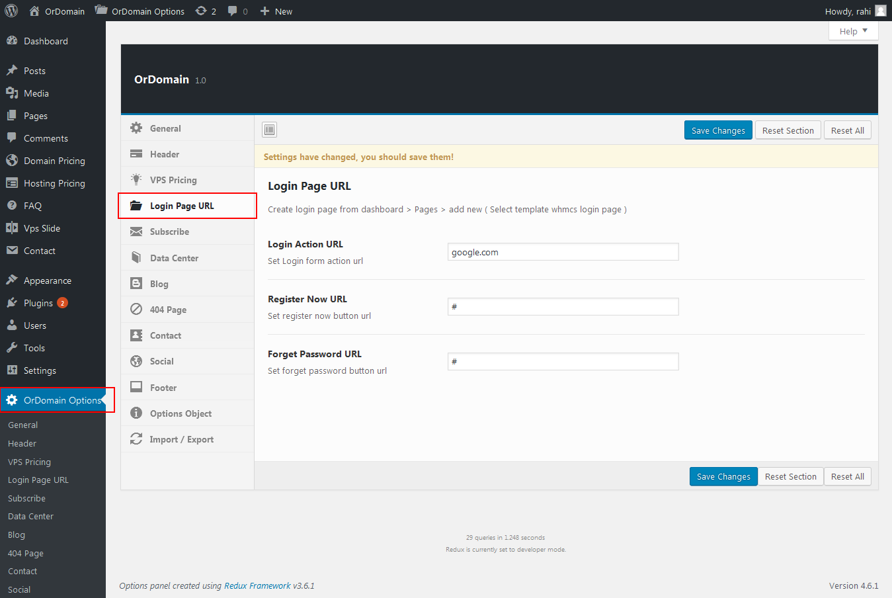Subscribe Setting
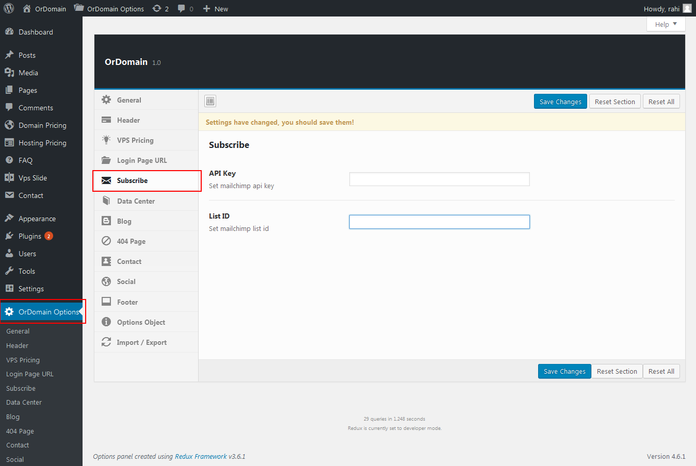Data Center Multi Pointer Map Setting
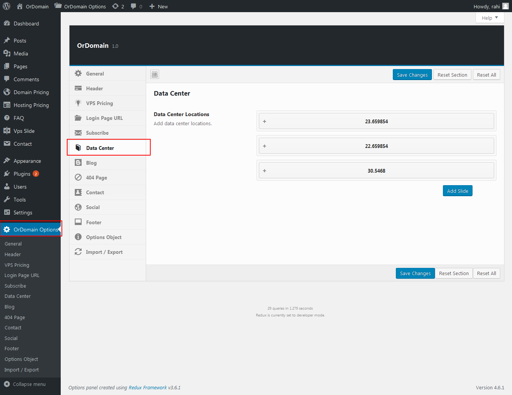Blog Setting
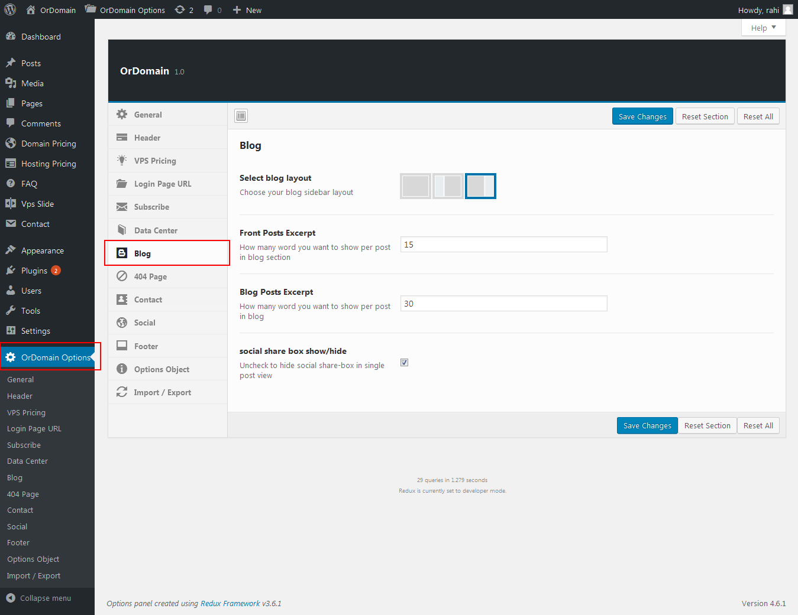404 Page Setting
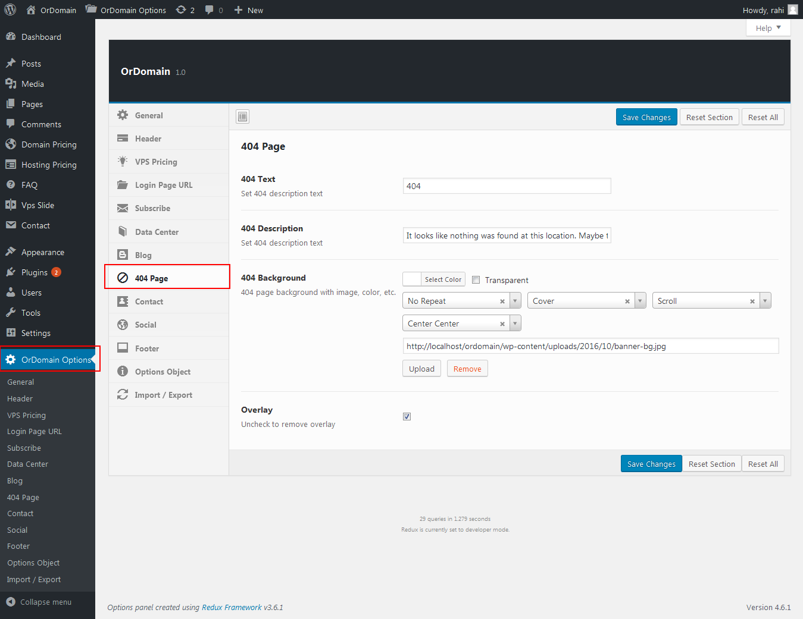Contact Setting
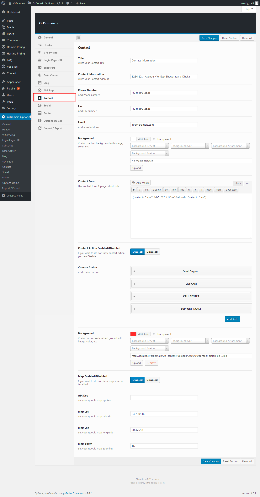Social Media Setting
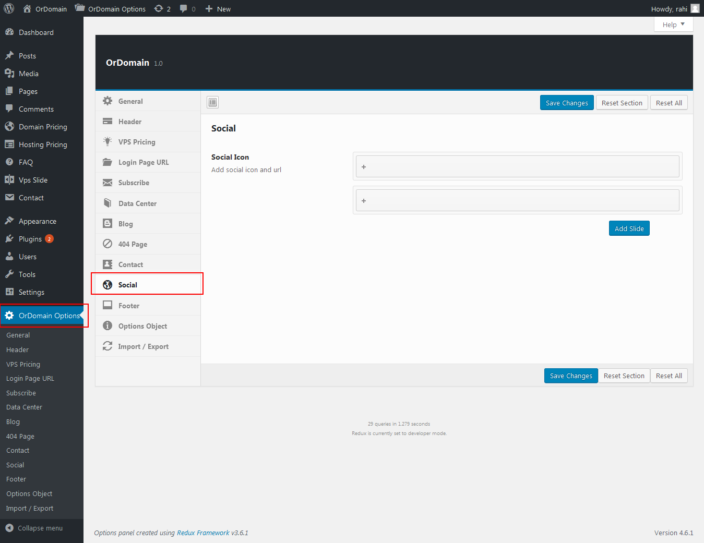Footer Setting
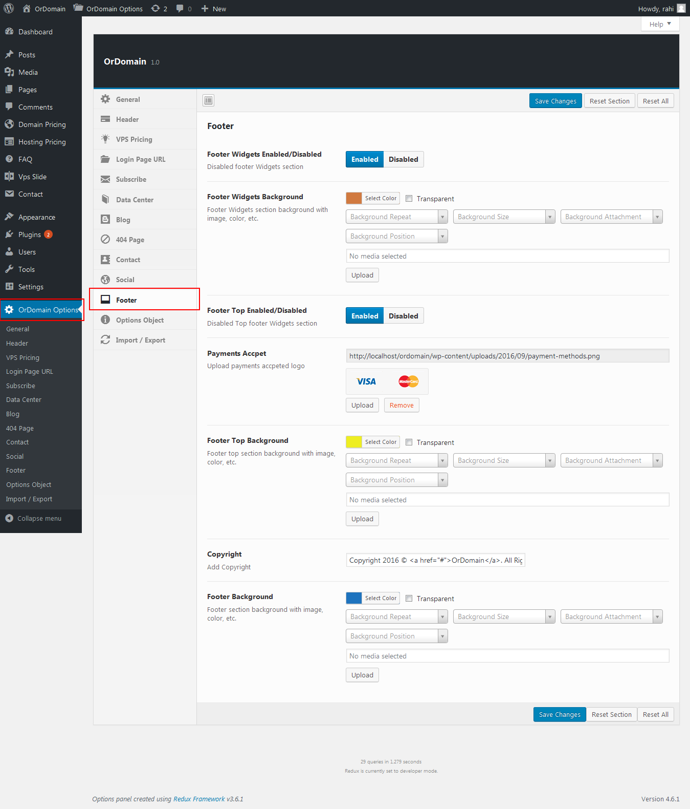WHMCS Bridge Setting
You can use WHMCS Bridge Plugin for integration WHMCS in wordpress.
If you want to use WHMCS Bridge Plugin, then you could download and learn more about the whmcs bridge plugin to click here.
How to Setup WHMCS Bridge Page
You could also use the WHMCS template separately that we have provided with our theme.
Please Note: the template has not provided to use with the WHMCS Bridge Plugin.
CONTACT FORM MARKUP
If you don't import our demo data then we recommanded to use this contact form 7 markup.
<div id="contactForm">
<div class="contact-form-status"></div>
<div class="row">
<div class="col-md-6">
<div class="form-group">
[text contactName class:form-control placeholder "Name"]
</div>
</div>
<div class="col-md-6">
<div class="form-group">
[email contactEmail class:form-control placeholder "Email"]
</div>
</div>
</div>
<div class="form-group">
[text contactSubject class:form-control placeholder "Subject"]
</div>
<div class="form-group">
[textarea contactMessage class:form-control placeholder "Message"]
</div>
[submit class:btn class:btn-custom-reverse class:submit-button "send"]
</div>
SOURCE AND CREADITS
Photos:
- All 'images' used on the demo site is for demonstration purposes only and are not included in the main download file.
- All Images Collected From 'Google Image Search'
Fonts Used:
- Google Fonts (Raleway) - http://www.google.com/webfonts
- Font Awesome - http://fontawesome.io/
Frameworks / Libraries:
- reduxframework - https://reduxframework.com/
- CMB2 - https://WordPress.org/plugins/cmb2/
- jQuery - https://jquery.com/
- Twitter Bootstrap - http://getbootstrap.com
Plugins Used:
- Contact Form 7 - https://WordPress.org/plugins/contact-form-7/
- Waypoints - https://github.com/imakewebthings/waypoints/
- jQuery CounterUP - https://github.com/bfintal/Counter-Up
- Owl Carousel - https://github.com/OwlFonk/OwlCarousel
- jquery bxslider - https://github.com/stevenwanderski/bxslider-4
- jquery ajaxchimp - https://github.com/scdoshi/jquery-ajaxchimp